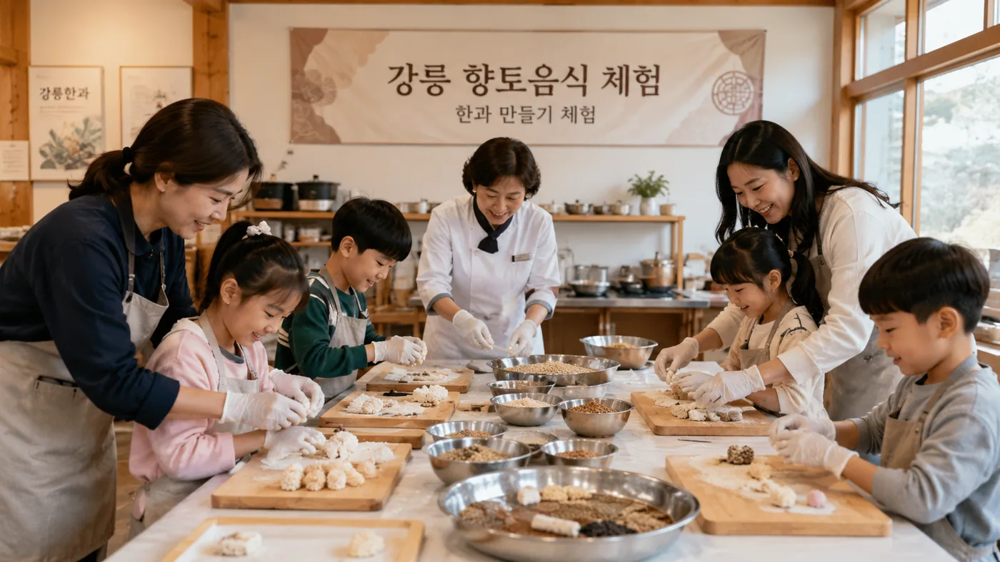
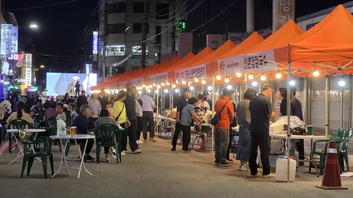
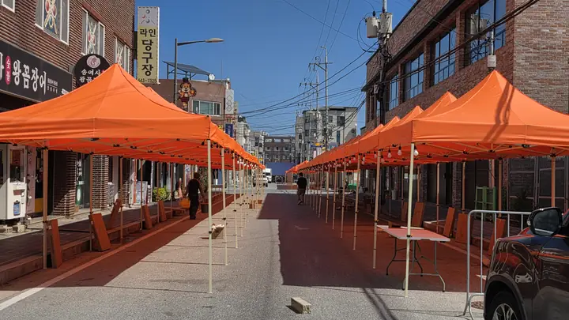
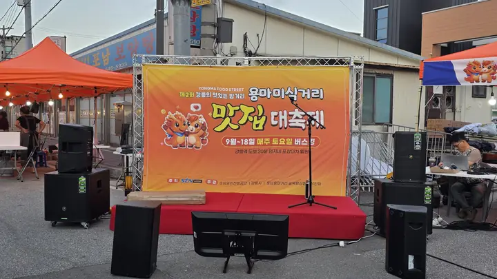

Taste thelocal night.
Local food. Live music. A street full of stories.
The best nights
aren’t on the main road.
Leave the beach behind for an evening. In Yongma, old neighbourhood kitchens meet street performances and local makers. Take it slowly. There’s more around the next corner.
The story of YongmaCome hungry.
Soft tofu, potato dumplings and flavours that have made this neighbourhood home for decades.
Meet Gangneung’s flavoursStay for one more song.
Acoustic sets, street performances and a DJ soundtrack to your Friday and Saturday nights.
Find your weekend rhythm
MAKETake a little local home.
Discover handmade finds, food workshops and the people behind Gangneung’s everyday culture.
Discover the experiencesReal people.
Real Yongma.
Pull up a chair. Discover the food and people behind the street.



Know the name.
Love the first bite.
A few Gangneung favourites to look for in the street. Tap a name to get to know it.
Ingredients vary by shop. Please ask about allergens and vegetarian options before ordering.
No rush.
Just a good night.
Every Friday and Saturday, 9 October – 14 November 2026. A car-free street, local food and a soundtrack that changes as the night goes on.
Check the latest event scheduleMeet Yong & Ma.
Follow our neighbourhood characters through four illustrated stories of Yongma.
Read all four storiesFind your
kind of corner.
Start at the gateway, then follow your curiosity. Food, music, photos and makers share the same neighbourhood.
Your next stop
after Gangneung Station.
Yongma Food Street, Ponam-dong, Gangneung, Gangwon-do, South Korea. About 10 minutes on foot (600m) from KTX Gangneung Station.
A few things to know.
When should I visit?
The street programme runs every Friday and Saturday, 17:00–22:00, from 9 October to 14 November 2026. Individual shops set their own opening hours.
Can I bring my suitcase?
Yes. Free staffed luggage storage is available on the street on event days, 17:00–22:00. Bring ID and collect your bag before closing. Valuables and electronics are not accepted.
I don’t speak Korean. Where do I start?
Start at the gateway for multilingual visitor information. Save the Korean location on your phone and check each workshop’s language support before joining.
What if it rains?
Some programmes continue under tents, and performances may be rescheduled. Some outdoor activities may pause in rain or strong winds; check the official programme for updates.
More from the street.
See the full photo collectionBring your talent
to the street.
A maker, a musician, or someone with something good to share? Meet the team behind Yongma.
Seller & performer applicationsIN YONGMA.